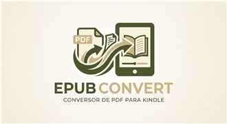

Escolha o PDF
Selecione um ou mais arquivos para colocar na fila.

Conversao online
Selecione um ou mais arquivos para colocar na fila.
O servidor processa cada arquivo e gera o EPUB automaticamente.
O download inicia quando a conversao termina.
Os arquivos enviados sao usados para gerar o EPUB e devem ser removidos automaticamente apos o processamento.
A conversao roda em um servidor gratuito que "dorme" quando fica sem uso. Se ele estiver acordando, a primeira conversao pode levar ate um minuto para comecar.
Guias de leitura digital
Entenda quando a conversao funciona bem e como evitar arquivos ruins.
KindleVeja os caminhos mais comuns para colocar o EPUB no seu dispositivo.
ProblemasPDF escaneado, layout em colunas e protecao podem afetar o resultado.